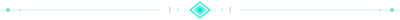
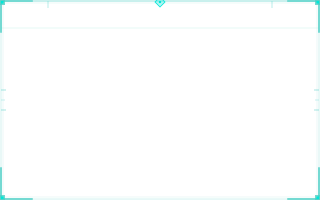

HUD Panel (CSS corner brackets)
Gabinete do Mestre
Consulte qualquer membro do Conselho de Lore. O painel HUD mantém o estado da sessão ativa enquanto você navega.
SVG Corner Brackets
Rune Divider

Scanline Overlay (backdrop texture)
Conteúdo com efeito scanline
scanline · repeating-linear-gradient · 3px cycle
Panel Frame (SVG)
